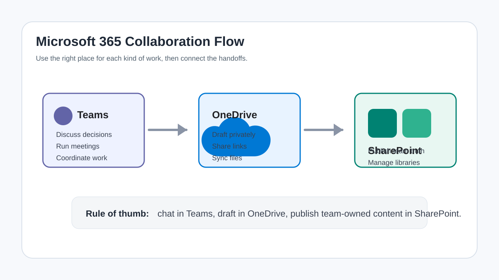
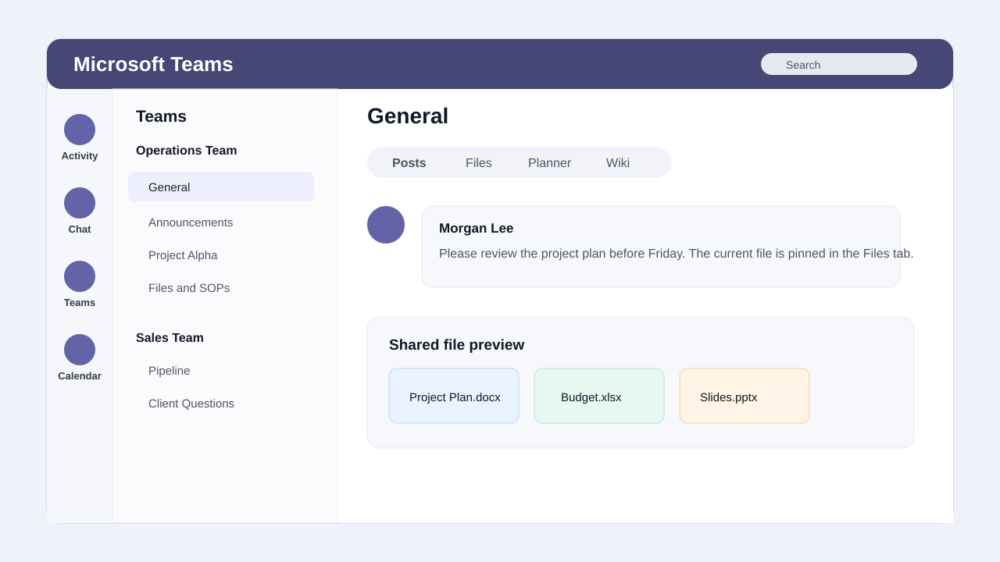
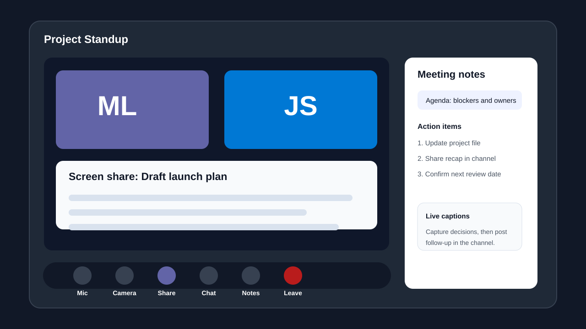
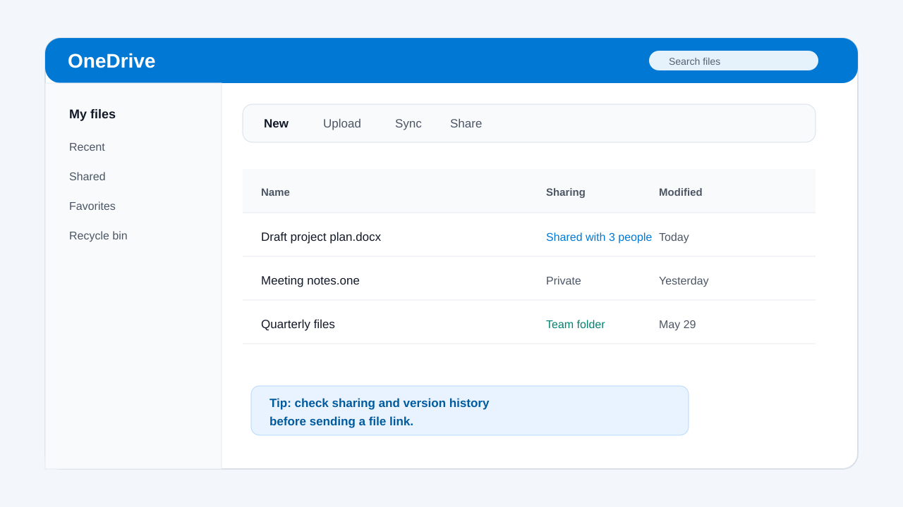
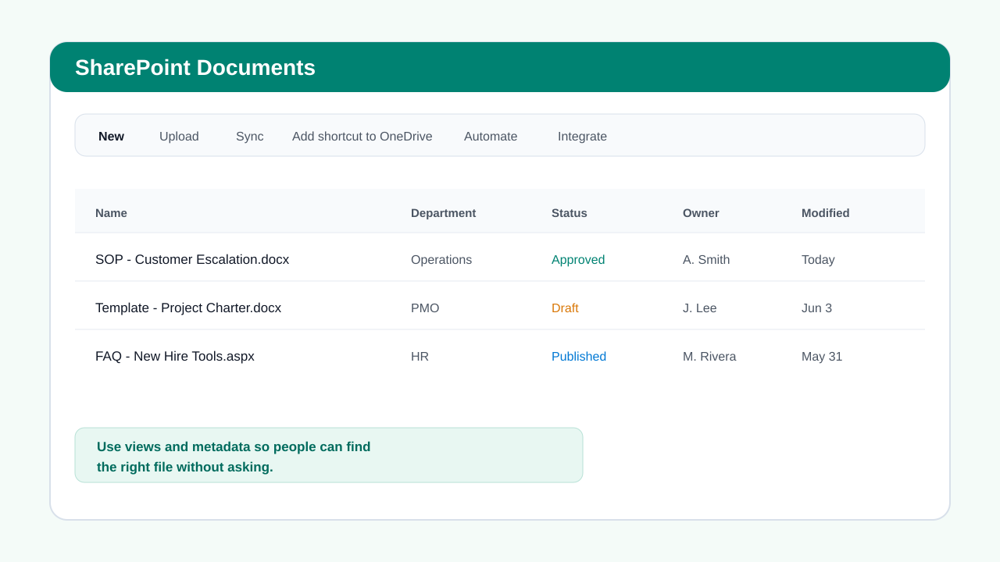
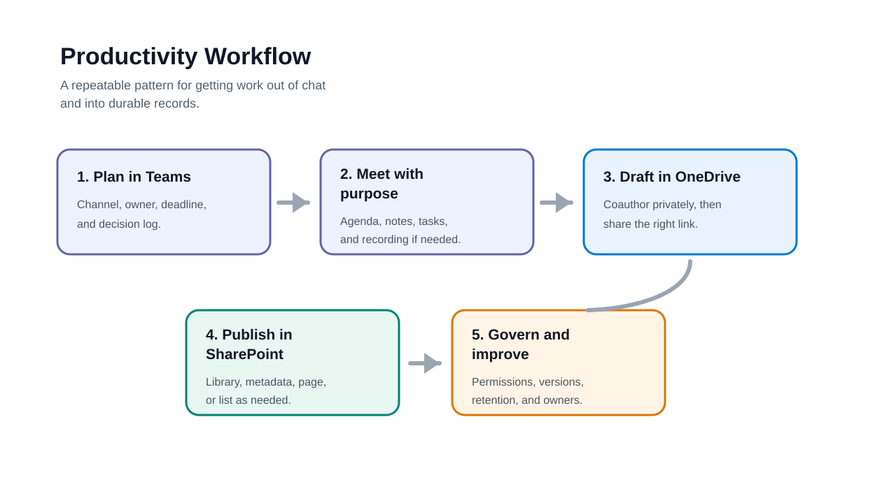
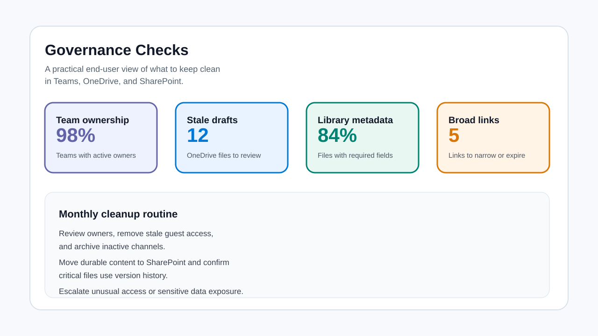

Plan the workspace
Decide whether the work needs a chat, channel, OneDrive draft, SharePoint library, list, or page. Name the owner, audience, deadline, and final location before files scatter.
Microsoft 365 end-user manual
A practical user guide for working better with Microsoft Teams, OneDrive, and SharePoint: where to store work, how to share safely, how to run cleaner meetings, and how to turn conversations into durable team knowledge.

Start here
Many productivity problems come from using the right app at the wrong stage. Use this workflow to decide where work should begin, where it should be discussed, and where the final version should live.
Click each step to see how a team should move work from idea to governed knowledge.
Decide whether the work needs a chat, channel, OneDrive draft, SharePoint library, list, or page. Name the owner, audience, deadline, and final location before files scatter.
Choose a daily lens
Different users need different habits. Use these tabs to focus the guide on everyday actions.
Use Teams to reduce scattered email, but do not let decisions disappear in chat. Post decisions, files, and action items in the correct channel.
You need conversation, meetings, quick decisions, channel announcements, task coordination, or a place where people can ask questions around shared work.
You are drafting, storing personal work files, sharing a file with a small audience, recovering a previous version, or syncing your own files across devices.
The content belongs to a team, department, project, process, or audience. SharePoint is where durable files, pages, lists, and governed knowledge should live.
Access and expectations
Teams, OneDrive, and SharePoint can store business records, confidential information, customer data, contracts, and internal decisions. Start by understanding access, ownership, and lifecycle expectations.
Do not share files broadly when they include employee, customer, financial, legal, security, or regulated information. Use your organization's labels and sharing rules.
Every team, file, site, library, list, and page should have an owner. If no one owns it, no one will clean it, update it, or answer access questions later.
Before sharing a draft, decide whether the final version belongs in OneDrive, a Teams channel file library, or a SharePoint site/library.
Teams foundation
Teams is the collaboration hub for chat, channels, meetings, files, apps, and notifications. The best Teams users keep work visible without overwhelming everyone.

Screenshot hotspot
Use the hotspot markers to understand the parts of a Teams workspace that matter for daily productivity.
Activity, Chat, Teams, Calendar, Calls, Files, and apps are different work surfaces. Choose the surface that matches the job instead of treating Teams as one large chat box.
Conversation management
Use chats for short-term private coordination. Use channels for work the team may need to find later. The more important the decision, the more visible and structured the post should be.
Use for quick questions, private coordination, or sensitive context that does not belong in a broad channel.
Best for: fast private follow-up.
Use for temporary coordination with a small group. If the topic becomes recurring, move it to a channel.
Best for: short-lived collaboration.
Use when the team needs visibility, searchable history, threaded replies, or file context tied to a team.
Best for: durable team discussion.
Use for important updates with a clear audience, headline, decision, and next action.
Best for: high-signal messages.
Meeting productivity
A Teams meeting should produce decisions, notes, owners, and follow-up. If it does not, it becomes an expensive conversation with no record.

Create a clear title, invite only required people, add agenda/context, attach pre-read files, and decide whether the meeting belongs in a channel.
Use chat for links, screen share for review, notes for decisions, captions when helpful, and recording only when policy allows and the value is clear.
Post recap, decisions, files, tasks, owners, and due dates in the channel or shared location where the work will continue.
Files inside Teams
Files shared in a standard Teams channel are stored in the connected SharePoint site. Files shared in a chat are typically stored in the sharer's OneDrive. That difference matters for ownership and long-term access.
Use this path when the file belongs to the team or project and should survive beyond one person's employment or role.
Use this path for short-term sharing, but move final team-owned files to SharePoint or a channel file library.
Personal file workspace
OneDrive is your personal Microsoft 365 file space. It is best for drafts, personal working files, controlled sharing, sync, recovery, and files that are not yet ready for a team-owned library.

Personal work files and drafts you own. Share carefully because access can depend on your account and link settings.
Files shared with you or by you. Review this area when you cannot find a file in your own folders.
Use when a file or folder was deleted by mistake and still falls within your organization's recovery window.
Undo and recover
OneDrive and SharePoint can help recover from accidental edits, overwrites, and deletions. The key habit is to check version history before recreating work manually.
Use when a file changed incorrectly, content disappeared, or you need to compare earlier versions.
Use when a file or folder was deleted and you need to restore it within your organization's retention window.
Use when many files were deleted, corrupted, or changed at once. Escalate to IT if you suspect ransomware or mass change activity.
Document management
A SharePoint document library is more than a folder. It can hold metadata, views, version history, approval states, alerts, flows, and permissions that help teams manage files at scale.

Use for familiar grouping when the structure is simple, but avoid deeply nested folders that hide files from search and views.
Use columns such as department, document type, owner, status, effective date, or audience to make filtering and views more useful.
Use views to show the same library by owner, status, category, recent updates, approvals, or audience without duplicating files.
Publishing and tracking
Use SharePoint pages and news for readable knowledge. Use Microsoft Lists or SharePoint lists when the team needs structured rows, columns, status tracking, ownership, and filtered views.
Use for evergreen instructions, onboarding, FAQs, process overviews, and curated links.
Best for: durable knowledge.
Use for timely announcements that should appear in news rollups and alerts.
Best for: timely updates.
Use for structured tracking such as requests, assets, issues, contacts, inventory, or approvals.
Best for: rows and statuses.
Use for files that need version history, metadata, and document-centered collaboration.
Best for: managed files.
Access control
Permissions determine who can see, edit, download, share, or manage content. End users should understand the common levels and know when to escalate to a site owner or IT.
Make the tools work together
Productivity improves when teams use the tools as a connected system: discuss in Teams, draft in OneDrive, publish in SharePoint, track structured work in Lists or Planner, and clean up access regularly.

Share cloud links, coauthor, comment, and manage access instead of emailing new copies.
Keep drafts in one place and use version history rather than creating v1, v2, final, and final-final copies.
Store recap, decisions, notes, recording links, and tasks in the channel or site that owns the work.
Review broad links, inactive guests, old teams, stale files, and missing owners on a recurring schedule.
Do the work
Use these scenarios when teaching teams how to choose the right app and complete a common workflow from start to finish.
Scenario builder
Select a workflow to see what to set up, what to avoid, and where the final record should live.
Use Teams for discussion, a channel Files tab or SharePoint library for shared documents, Planner or Lists for task tracking, and a SharePoint page for final project knowledge.
Keep it clean
Good Microsoft 365 habits protect productivity and information security. End users do not need to be administrators to keep workspaces clean, findable, and safe.

Give people the access they need, for the purpose they need, and remove access when the work ends.
Avoid duplicate final files. Publish the final record in the team-owned location.
Make sure Teams, sites, files, pages, and lists have active business owners.
Fix common issues
Most Microsoft 365 issues come from permissions, sync, duplicate files, wrong location, meeting settings, or unclear ownership. Check context before recreating the work.
| Issue | Check first | Typical owner |
|---|---|---|
| Cannot find a file | Search OneDrive, Teams, SharePoint, Shared with me, Recent, and the channel Files tab. Check whether it was shared by link. | File owner or site owner. |
| Cannot open a file | Permissions, account, guest status, expired link, sensitivity label, external sharing policy, or deleted file. | File owner, site owner, or IT. |
| Sync is stuck | Network, file path length, invalid characters, open Office files, storage space, duplicate names, or sync client status. | User first, then IT. |
| Too many Teams notifications | Channel notification settings, pinned channels, @mentions, activity filters, quiet hours, and meeting chat notifications. | User or team owner. |
| Meeting recording missing | Recording permissions, organizer settings, policy, storage location, expiration, and whether recording was actually started. | Organizer or IT. |
| SharePoint page outdated | Page owner, last modified date, source documents, audience targeting, and whether the content should be archived. | Page owner or site owner. |
Reference
A focused conversation and file area inside a Team. Standard channel files are stored in SharePoint.
A private 1:1 or group conversation. Chat-shared files usually live in the sharer's OneDrive.
A SharePoint file container with metadata, views, version history, and permissions.
An external person invited to collaborate under your organization's guest access rules.
Columns or properties used to describe files or list items so they can be filtered, grouped, and managed.
A shortcut to shared content that appears in OneDrive, often used for active SharePoint libraries or folders.
A sharing link that controls who can access content and whether they can view or edit.
A record of prior file versions that can be reviewed or restored when mistakes happen.